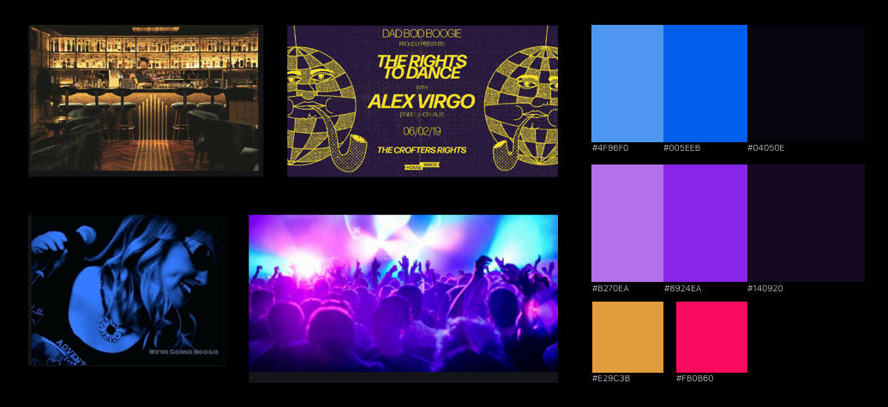

Nightly Knight
For a mini design challenge, I crafted a mobile experience to facilitate a frictionless night-out experience.
Project Duration
5 days
Aug 2019
Project Type
Design challenge
Tools
Sketch
InVision Studio
WHAT IS NIGHTLY KNIGHT?
A mobile app that helps you enjoy a better night out.
Have you ever waited in the cold to get into a popular bar on a football night? What if you can skip the line and join the party sooner, instead of shivering in the bad weather?
Nightly Knight is a mobile app that enables users to purchase fast passes to skip the line, pre-order food and beverages, while marking their favorite night venues and exploring new ones to ensure another fun night out.
1. Explore venues
Search venues nearby, from your previous visits, by category, or using keyword search.

2. Purchase fast pass and preorder drinks
Skip the line by purchasing fast entry passes, and order your food & drinks to skip the wait.
3. Easily redeem your passes
Verify your purchases with the doorman using QR-code within seconds.

4. Save your favorites
Browse collection of your favorite night venues so you know where to go next night out.

THE PROCESS
THE DESIGN CHALLENGE PROMPT
Imagine you are designing a mobile application for customers to interact with their favorite bars. The app should allow users to select a bar, purchase a pass to get into the bar without waiting in line, and preorder drinks and food at the bar.
DEFINING EXPERIENCE OUTCOMES
Understanding user needs and design goals
I conducted a quick research session by collecting online reviews of similar platforms to understand user pain points and use cases.
From there, I developed a set of experience outcomes that the mobile application should achieve:
I can easily discover good venues and browse what they have to offer.
- Whether it’s that bar I always go with friends, or when we want to try something new.
- I won’t miss out on any special offers that helps us enjoy the night more.
I can quickly make the purchase when I need it.
- I want the pass to be easily accessible and verifiable, since I can’t wait any longer in the cold.
- I want to easily check hwat's available for preorder, so I can make a quick decision on my first drink.
The app knows me, and I know my next night out is going to be as great.
- I can easily review what I purchased to ensure another great night out.
- The app reminds me which bars I have been to so I can recommend them to my friends.
IDEATION & PROTOTYPE
Top-down approach focusing on the usage scenarios
Information Architecture
After gathering user needs, I mapped out the strucutre of the app.
Color Palette
I opted for a dark theme design for the app's visual, because the app is most likely being used at night, where the abient light is low. The color palette features blue and violet to create an electric vibe that signifies nightly fun.

Scenarios and usage flow
I developed two major usage scenarios synthesized from the research phase. For each, I created a user flow to validate my desgin.
Scenario 1. Joining the partying group
When Jenny arrives at La Loca after her part-time job and sees the long line, she is afraid that she has to join Juana’s birthday party even later.
She opens the app and learns that the Club will be closed at 1am. That is just almost three more hours away. As she thinks about how many epic moments she is going to miss while standing in the line, she quickly purchases La Loca’s fast pass. From the top preorder menu list she also picks her favorite cocktail, to get herself a quick start.
Walking straight through the door and getting her drink at the bar after displaying her purchase confirmation, she saw her friends at the other side of the room.
Scenario 2. Planning for the awaited night
When Bohi and friends finish the tough midterm week, they knows it’s time to celebrate. Nothing will be more fun than drinking beer while watching Michigan plays at OSU this Saturday evening.
As the usual leader in the group, he has to make sure nothing ruins their night. Knowing that their favorite bar, Ace’s, will be all full at a game night, Bohi opens the app to purchase fast passes for 5 of them. He can’t be more delighted to see that the first beer only costs 75 cents when pre-ordered with each pass.
When the group shows up at the bar, Bohi opens the app and enjoys his friends’ appreciation as they walk pass the waiting line.
Screenshots
REFLECTIONS
If I had more time...
This design challenge is a great learning experience for me to explore a different industry and design the user experience for it. In addition, I have learned to make design decisions based on speculations on user behaviors, comparative analysis, and previous design experiences, instead of direct user feedback. Compared with other projects that I have done before, this exercise has allowed me to think more critically while making quick decisions.
If I had more time, I would have done more primary research by talking to nightlife experts such as frequent party goers and venue owners, in order to learn more pain points and usage scenarios. Especially, I am interested in learning user search behaviors while waiting in line, and any nuances related to the night time and the fun-having purposes that this app offers. I would also have loved to design the interface for the businesses to help them visualize business performance and customer management.